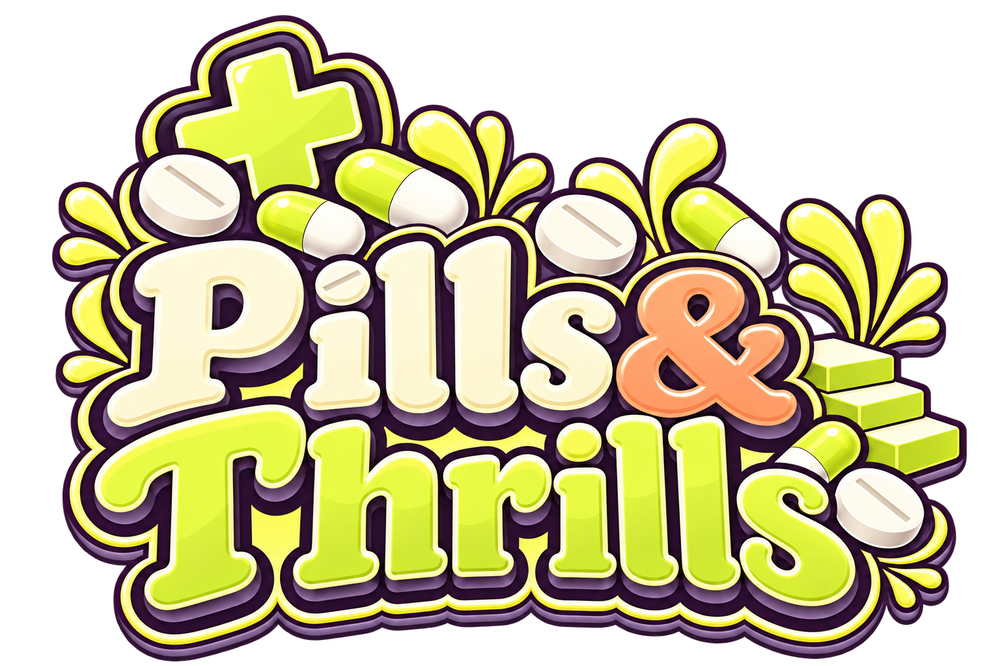

A LITTLE CLIMB. A LOT OF ATTITUDE.
One more step, dear?
Cash out before the tumble.
Stay for the disco.

Demo · Virtual credits
READY WHEN YOU ARE
STEP 00✳ SMALL STEPS. BIG ENERGY.MAX 1,000×
A LITTLE CLIMB. A LOT OF ATTITUDE.
Cash out before the tumble.
Stay for the disco.

Demo · Virtual credits